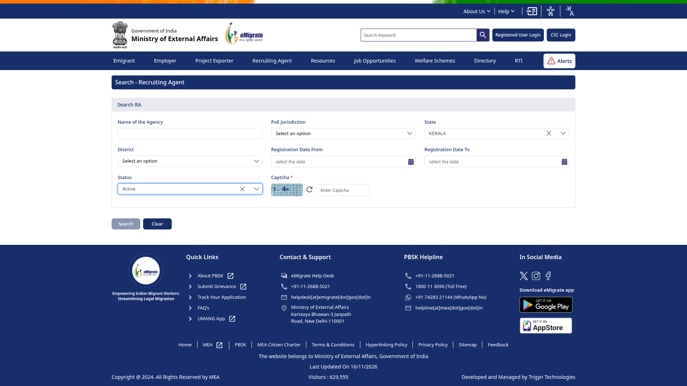
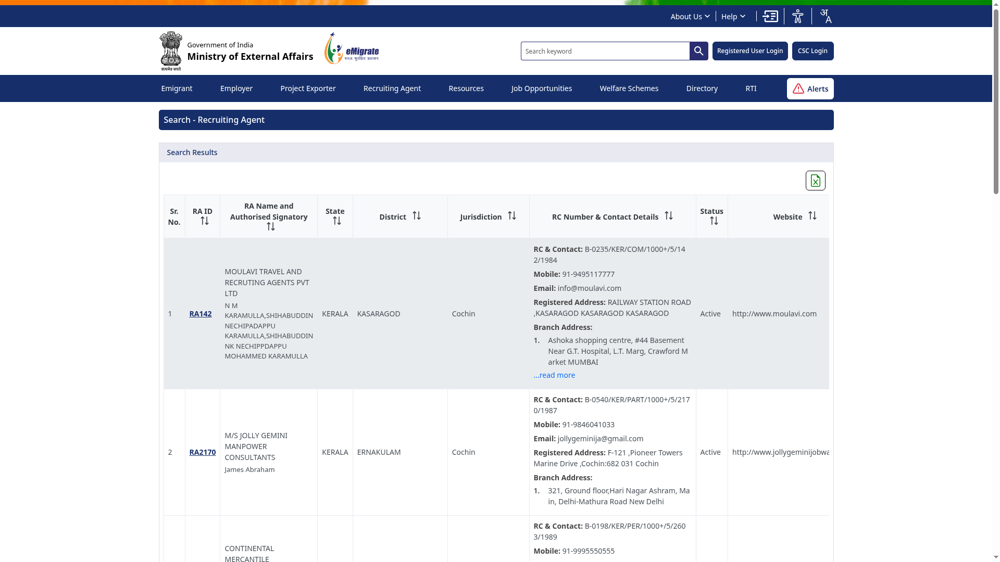
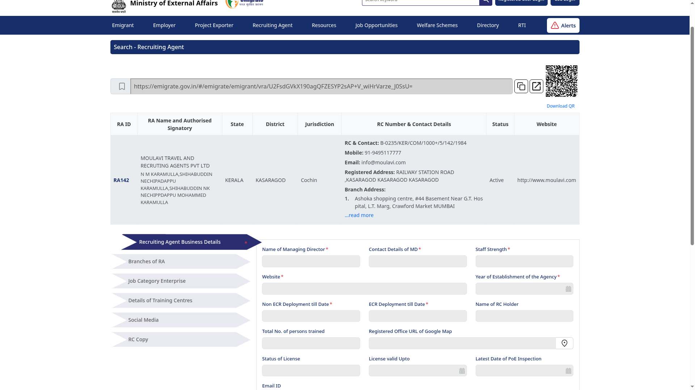
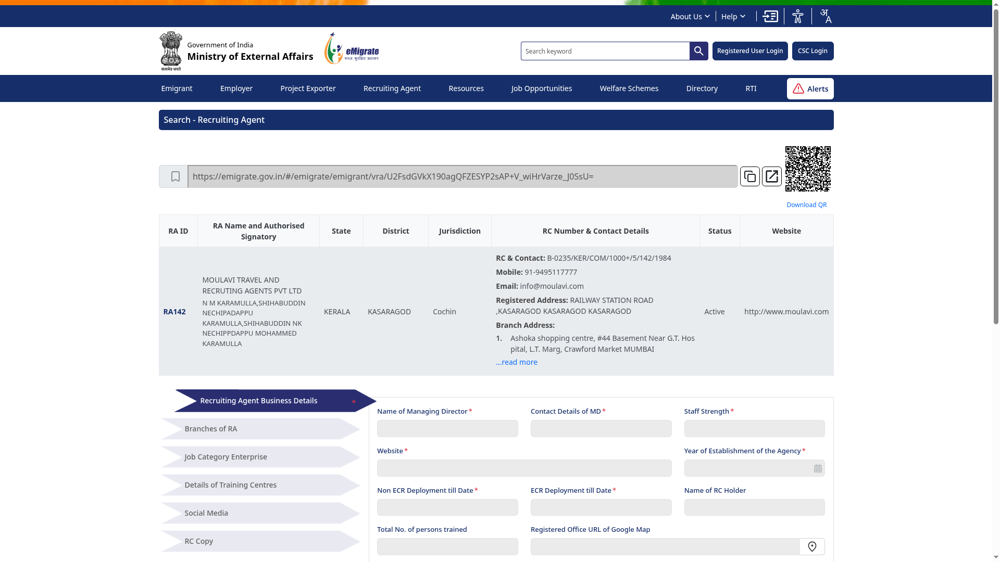

Overseas-job safety · Government lookup
eMigrate: check a recruiting agent before paying for an overseas job
India's eMigrate portal lets you look up recruiting-agent records. We tested a Kerala filter and an exact RA ID search. Use the result as a registration check, not a guarantee that an overseas job is genuine.
Why this check is useful
An overseas-job advertisement may show a company name, a registration number and a WhatsApp contact. Those details can look convincing without proving that the sender represents that company. The public eMigrate search gives you a government record to compare with the advertisement instead of relying only on the sender's screenshot or explanation.
This is useful for job seekers and families checking an intermediary for overseas recruitment. It is not a job board recommendation, a ranking of agencies or a substitute for the checks required for your destination and employment route. We did not evaluate any agency's service quality.
Start at the official portal
Use emigrate.gov.in, then open Find Recruiting Agent, or use the direct official lookup above. Check the address carefully rather than following a payment or document-upload link supplied by an unknown caller.
The public search in our test did not require an account, passport number, card or payment. The page also contains login buttons for other services, but we did not use them. Do not confuse this limited no-login search with a promise that every service on the portal works without registration or charges.
Two ways to search
If you have an RA ID
Enter it in RA ID on the basic search form. Complete the captcha shown in your session and select Search. We entered one RA ID from the public Kerala results and received one matching record. The form also showed Name of the Agency, but we did not separately test a name-only search.
Copy the identifier carefully. Do not assume an RA ID and the longer registration-certificate number are interchangeable. The result displays both. If the sender gives you only a certificate number, compare it with the record rather than guessing which part belongs in the RA ID field.
If you want the Kerala filter
Open Advanced Search. We selected State: KERALA and Status: Active, completed the arithmetic captcha and searched. The portal returned populated rows. This helps narrow the directory; being based in Kerala does not make an agency an AiCoN recommendation.
The Active filter describes the returned registry status. It does not show whether a specific vacancy is genuine, and it is not a complete history of every agent or complaint. Other filters, status categories, exports and bulk downloads were not tested.

Read the row, not just the name
Our desktop results included the RA ID, agency and authorised-signatory names, state, district, jurisdiction, registration-certificate number, published contact/address details, status and website field. Compare the full identity, not just a familiar brand name.
- RA ID and RC number: match the numbers to the claimed agency.
- Office and contacts: compare the registered address and contact information. A different number needs clarification, not an assumption that it belongs to a genuine employee.
- Status: read the current result, and recheck when you are ready to rely on it. A saved image or old PDF is not a live status check.
For independent confirmation, start from contact details obtained from the government record, not only from the original advertisement. We did not contact any agency, test its website or establish who currently controls a published phone number or mailbox.

A limitation inside one detailed profile
We opened one result through its RA ID. Its summary row populated and displayed Active. However, many extra business-detail fields were blank and disabled, including the licence-validity field and complaint-history totals.
Blank does not mean zero complaints, a verified expiry date or wrongdoing. It means those details were not established by the profile we saw. Do not turn an empty field into a reassuring claim. We did not test every profile, and this finding must not be generalised to every record.
If a detail matters to your decision, get current confirmation from the appropriate official channel. Do not fill the gap using an old directory PDF or an agency's own unsupported claim.


Can you use it on a phone?
The basic RA ID search returned a matching record in our 390px mobile-layout test. The form fitted the page, but the results table was wider than the screen. Some columns were outside the initial view.
Do not stop after reading the visible agency name. You need the RC, contact and status columns too. Horizontal table navigation was not successfully verified in our check. If you cannot inspect all those fields on your phone, use a desktop browser or ask someone you trust to help. We did not test a physical phone or screen reader.
What to check beyond registration
The Ministry of External Affairs' December 2023 advisory tells job seekers to check registered recruiting agents and warns about fake offers and hard-to-trace messaging contacts. It also describes the importance of an employment contract and warns against treating a tourist visa as permission to work. Check the current requirements for the specific country and job with the relevant authorities.
This guide deliberately does not quote a current service-charge ceiling or a complete migration cost. Older MEA pages and later official notices contain different fee wording. Ask the relevant Protector of Emigrants office for the current rule before agreeing to charges, and obtain proper written terms and receipts. A recruitment payment or visa decision needs more than a directory match.
The eMigrate homepage provides Contact & Support and a PBSK Helpline link. Use those official routes for clarification. We verified their presence, not response time, grievance outcomes or availability of help in every language. No complaint was submitted for this review.
Exactly what we tested
- Opening the official public recruiting-agent search.
- Advanced Search with Kerala and Active, returning populated rows.
- A separate exact RA ID lookup at 390px, returning one matching record.
- Opening one detailed profile and comparing its populated summary with blank extra fields.
No applicant details, passport, login, payment, registration, grievance or message submission was used. Name-only searches, other states/statuses, downloads, identity verification, agency performance, employer legitimacy, actual phone hardware and visa processing were not tested.
Use this as one early check in an overseas-job decision. A matching record is a reason to continue careful verification, not a reason to stop it.
Sources
- eMigrate public portal · Government service homepage; live browser.
- Find Recruiting Agent · Government live registry; functional test.
- MEA Recruiting Agents · Government static guidance; legacy wording.
- MEA Overseas Employment · Government document index.
- MEA complaints guidance · Government static FAQ.
- MEA advisory on illegal recruiting agents · Government press release; 11 December 2023.
- Advisory on overseas recruitment · Government advisory PDF; December 2023.
Independent AiCoN explainer, not a government notice or recruiting service. Direct public-search tests checked 22 November 2026. Older advisory dates are shown deliberately; no new scheme, deadline or new launch is claimed.